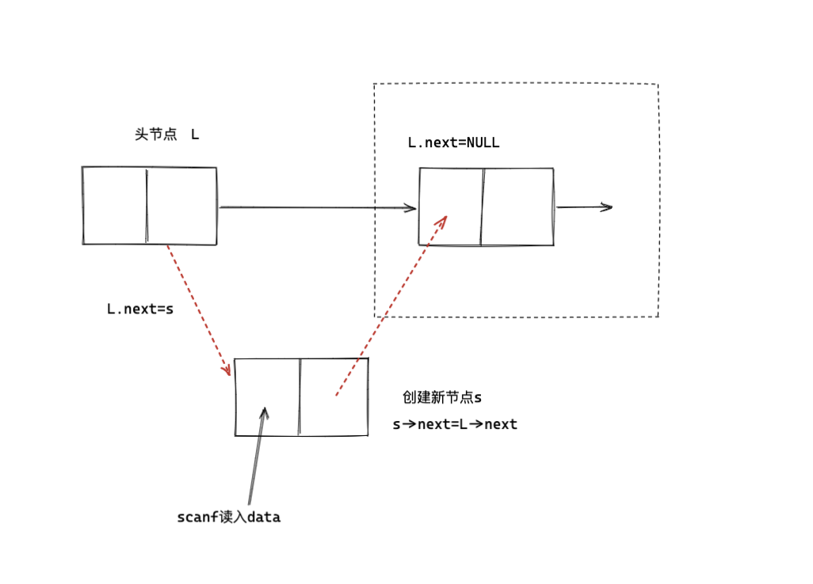
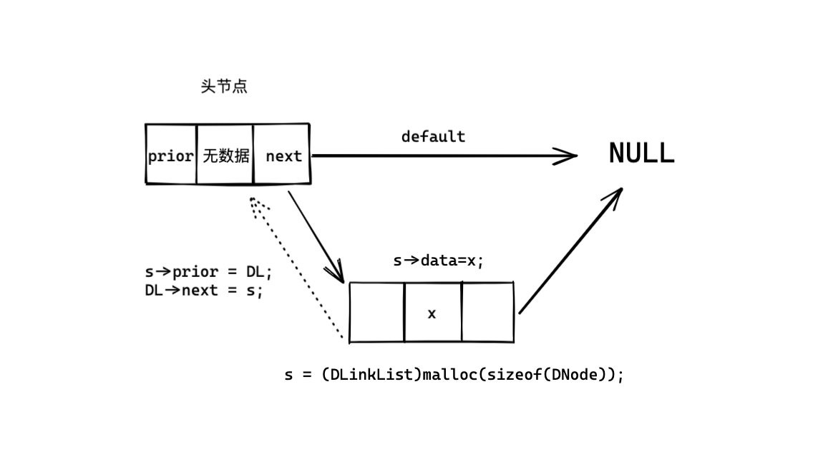
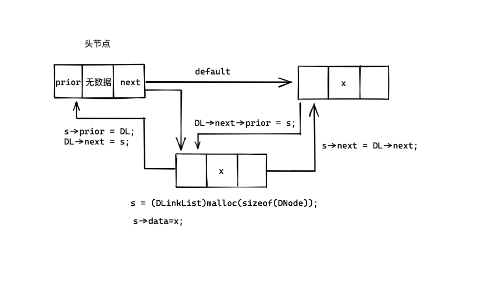
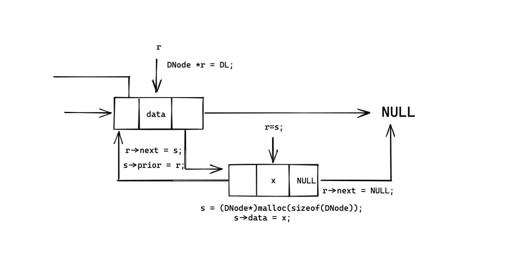
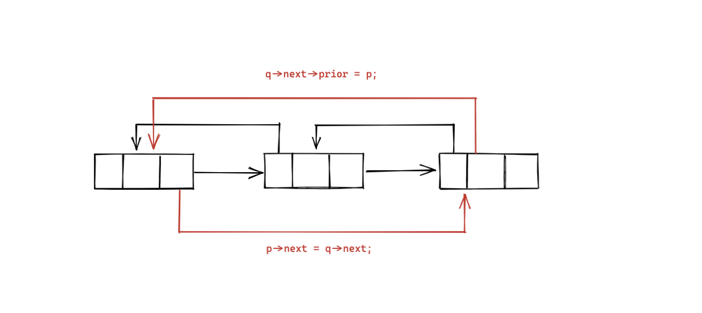
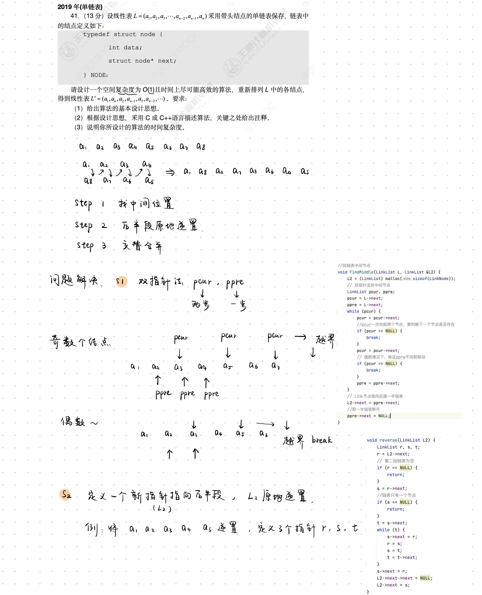

LinearList线性表
- 线性表的顺序表示
- 线性表的链式表示
1.线性表
由n (n>=0)个相同类型元素组成的有序集合
L = (a1,a2,...,ai)
线性表中元素的个数称为线性表的长度
- a1是唯一的“第一个”数据元素“，an是唯一的”最后一个“数据元素
- ai-1为ai的直接前驱，ai+1为ai的直接后继
- 元素个数有限
- 数据类型相同
- 逻辑上具有顺序性
2.线性表的顺序表示
线性表顺序表示的优缺点
- 优点
- 随机存取
- 存储密度高
- 缺点
- 插入&删除时需要移动大量元素
- 线性表发生较大变化时，难以确定存储空间的容量
- 存储分配需要连续内存空间，不够灵活
线性表的时间复杂度
- 最好情况，表尾插入O（1）
- 最坏情况，表头插入 O（n）
- 平均情况，移动次数O（n/2）
线性表的时间复杂度为O（n）
3.顺序表代码
结构：
typedef int ElemType;
typedef struct SqList {
ElemType data[MaxSize];
int length;
} SqList;
void PrintSqList(SqList L){...}
bool InsertSqList(SqList &L, int pos, ElemType val){...}
bool DelSqList(SqList &L, int pos, ElemType &val){...}
bool GetSqList(SqList L, ElemType num, ElemType &val){...}
int main() {
SqList L;
L.data[0] = 1;
L.data[1] = 2;
L.data[2] = 3;
L.length = 3;
PrintSqList(L);
//增加
InsertSqList(L, 2, 99);
PrintSqList(L);
//删除
ElemType DelValue;
DelValue = DelSqList(L, 2, DelValue);
PrintSqList(L);
//查询
ElemType GetRes;
GetSqList(L,3,GetRes);
printf("查询的数字是%d\n",GetRes);
return 0;
}
全部代码：
#include <stdio.h>
#define MaxSize 50
typedef int ElemType;
typedef struct SqList {
ElemType data[MaxSize];
int length;
} SqList;
void PrintSqList(SqList L) {
for (int i = 0; i < L.length; i++) {
printf("%3d", L.data[i]);
}
printf("\n");
}
bool InsertSqList(SqList &L, int pos, ElemType val) {
if (pos < 1 || pos > L.length + 1) {
return false;
}
if (L.length > MaxSize) {
return false;
}
for (int j = L.length; j >= pos; j--) {
L.data[j] = L.data[j - 1];
}
L.data[pos - 1] = val;
L.length++;
return true;
}
bool DelSqList(SqList &L, int pos, ElemType &val) {
if (pos < 1 || pos > L.length + 1) {
return false;
}
val = L.data[pos - 1];
for (int i = pos - 1; i < L.length; i++) {
L.data[i] = L.data[i + 1];
}
L.length--;
return true;
}
bool GetSqList(SqList L, ElemType num, ElemType &val) {
for (int i = 0;i<L.length;i++)
{
if(L.data[i] == num)
{
val = L.data[i];
return true;
}
}
val = 404;
return false;
}
int main() {
SqList L;
L.data[0] = 1;
L.data[1] = 2;
L.data[2] = 3;
L.length = 3;
PrintSqList(L);
//
InsertSqList(L, 2, 99);
PrintSqList(L);
//
ElemType DelValue;
DelValue = DelSqList(L, 2, DelValue);
PrintSqList(L);
//
ElemType GetRes;
GetSqList(L,3,GetRes);
printf("查询的数字是%d\n",GetRes);
return 0;
}
4.线性表的链式表示
链式存储：逻辑上相邻的两个元素在物理位置上不相邻
与顺序表相比：
- 插入和删除不需要移动元素，只需要修改指针
- 不需要连续的大量内存空间
- 单个结构体需要存储指针域
- 不支持随机存取
以下例子为带有头节点的链表
链表节点结构体：
typedef int element_type;
typedef struct Lnode{
element_type data; //本节点的数据
struct Lnode *next; //下一个节点的指针
}LNode,*LinkList;
//Lnode为结构体，LinkList为结构体指针
4.1 头插法建立单链表

#include <stdio.h>
#include <stdlib.h>
typedef int ElemType;
typedef struct LinkNode {
ElemType data;
struct LinkNode *next;
} LinkNode, *LinkList;
void PrintList(LinkList L)
{
L = L->next;
while (L != NULL){
printf("%3d",L->data);
L = L->next;
}
}
LinkList HeadInsert(LinkList &L) {
LinkList newNode; //声明新节点指针
int x;
L = (LinkList) malloc(sizeof(LinkNode));//初始化头节点
L->next = NULL;
scanf("%d", &x);
while (x != 9999) {
newNode = (LinkList) malloc(sizeof(LinkNode));//分配新节点空间
newNode->data = x;//新节点赋值
newNode->next = L->next;
L->next = newNode;
scanf("%d",&x);
}
}
int main() {
LinkList testHeadInsert;
HeadInsert(testHeadInsert);
PrintList(testHeadInsert);
return 0;
}
4.2 尾插法建立单链表

在尾插法中，需要多用一个指针（LinkList类型）来表示表尾元素的位置，
本实例中，与新节点的指针一同定义
#include <stdio.h>
#include <stdlib.h>
typedef int ElemType;
typedef struct LinkNode {
ElemType data;
struct LinkNode *next;
} LinkNode, *LinkList;
void PrintList(LinkList L)
{
L = L->next;
while (L != NULL){
printf("%3d",L->data);
L = L->next;
}
}
LinkList TailInsert(LinkList &L)
{
LinkList newNode,pointer; //声明新节点，以及标识表尾的指针
int x;
L = (LinkList) malloc(sizeof (LinkNode)); //初始化头节点
pointer = L; //指针此时指向头节点
scanf("%d",&x);
while (x!=9999)
{
newNode = (LinkList) malloc(sizeof (LinkNode));//初始化新节点
newNode->data = x;//新节点赋值
newNode->next = pointer->next;
pointer->next = newNode;
pointer = newNode;//更新指针又重新指向新的表尾
scanf("%d",&x);
}
return L;
}
int main() {
LinkList testTailInsert;
TailInsert(testTailInsert);
PrintList(testTailInsert);
return 0;
}
4.3 单链表查询（按位置）
LinkList GetElem(LinkList L, int pos) {
int j = 1;
LinkList p = L->next;
if (pos == 0)
return L;
if(pos<1){
return NULL;
}
while(p&&j<pos)
{
p = p->next;
j++;
}
return p;
}
4.4 单链表查询（按值）
LinkList LocateElem(LinkList L,ElemType val)
{
LinkList p = L->next;
while (p!=NULL && p->data !=val)
{
p = p->next;
}
return p;
}
4.5 插入新节点
bool InsertElem(LinkList L,int pos,ElemType val)
{
LinkList before = GetElem(L,pos-1); //获取新节点前一个节点的指针
if (before == NULL)
{
return false;
}
LinkList newNode;
newNode = (LinkList)malloc(sizeof (LinkNode));//给新节点分配空间
newNode->data = val;
newNode->next = before->next;
before->next = newNode;
return true;
}
4.6 删除节点
bool DelElem(LinkList L,int pos)
{
LinkList before = GetElem(L,pos-1);
printf("before=%3d\n",before->data);
if(before == NULL)
{
return false;
}
LinkList current = before->next; //中间指针变量的创建
before->next = current->next;
free(current);
current = NULL;
return true;
}
在删除节点的过程中，需要借助一个中间指针变量current来记录此时删除的节点，
因为需要通过current节点访问before节点的后继的后继
5.双向链表
双向链表结构体的定义
typedef int element_type
typedef struct DNode{
ElemType data; //数据域
struct DNode *prior; //前驱指针
struct DNode *next; //后继指针
}DNode,*DinkList;
双链表的结构包括，含有空数据的头指针，以及之后的 每一个包含数据的结构体节点。
双链表的一个结构体节点占12个字节的空间
头节点（无数据的节点）只有后继指针，不成为前驱指针指向的对象
5.1双向链表头插法


DLinkList ListHeadInsert(DLinkList &DL)
{
DNode *s;
int x;
DL = (DLinkList)malloc(sizeof(DNode));
DL->next = NULL;
DL->prior = NULL;
scanf("%d",&x);
while(x!=9999)
{
s = (DLinkList)malloc(sizeof(DNode));
//建立新的数据节点，结构体（指针）
s->data=x;
s->next = DL->next;
if(DL->next != NULL)
{
DL->next->prior = s;
}
s->prior = DL; //unnecessary own opinion
DL->next = s;
scanf("%d",&x);
}
return DL;
}
5.2 双向链表尾插法

DLinkList DlistTailInsert(DLinkList &DL)
{
int x;
DL = (DLinkList)malloc(sizeof(DNode));
DNode *s;
DNode *r = DL;
DL-> = NULL;
scanf("%d",&x);
while(x!=9999)
{
s = (DNode*)malloc(sizeof(DNode));
s->data = x;
r->next = s;
s->prior = r;
r=s;
scanf("%d",&x);
}
r->next = NULL;
return DL;
}
5.3 双向链表遍历
void PrintDList(DLinkList DL)
{
DL = DL ->next;
while(DL != NULL)
{
printf("%3d",DL->data);
DL = DL->next;
}
printf("\n");
}
5.4 双向链表插入元素

bool DListFrontInsert(DLinkList DL,int i,element_type)
{
DLinkList p = *get_element(DL,i-1);
if (p==NULL)
{
return false;
}
DLinkList s = (DLinkList)malloc(sizeof(DNode));
s->data = e;
s->next = p->next;
p->next->prior=s;
p->next = s;
s->prior = p;
return true;
}
5.5 双向链表删除元素

bool DListDelete(DLinkList DL,int i)
{
DLinkList p = *get_element(DL,i-1);
if(p==NULL)
{
return false;
}
DLinkList q;
q = p->next;
if (q==NULL)
{
return false;
}
p->next = q->next;
if(q->next != NULL)
{
q->next->prior = p;
}
free(p);
return true;
}
int main() {
LinkList L;
// List_HeadInsert(L);
List_TailInsert(L);
LNode L1;
int res;
L1 = *get_element(L,2);
res = L1.data;
printf("%d\n",res);
}
6.LinkList-2019-41
题目
41.(13分) 设线性表L=（a1,a2,a3,...,an）采用带头节点的链表保存，链表结构体定义如下
typedef struct node{
int data;
struct node *next;
}NODE;
请设计一个空间复杂度为O(1)并且时间上尽可能高效的算法，重新排列L中的节点，
得到线性表L'=（a1,an,a2,an-1,a3,an-1,...）
- 给出算法设计基本思想
- 用C/C++描述算法
- 说明时间复杂度
设计思想


代码
#include <stdio.h>
#include <stdlib.h>
typedef int element_type;
typedef struct Lnode {
element_type data;
struct Lnode *next;
} LinkNode, *LinkList;
void PrintList(LinkList L) {
L = L->next;
while (L != NULL) {
printf("%3d", L->data);
L = L->next;
}
printf("\n");
}
LinkList TailInsert(LinkList &L) {
LinkList newNode, pointer;
int x;
L = (LinkList) malloc(sizeof(LinkNode));
pointer = L;
scanf("%d", &x);
while (x != 9999) {
newNode = (LinkList) malloc(sizeof(LinkNode));
newNode->data = x;
newNode->next = pointer->next;
pointer->next = newNode;
pointer = newNode;
scanf("%d", &x);
}
return L;
}
//找链表中间节点
void FindMiddle(LinkList L, LinkList &L2) {
L2 = (LinkList) malloc(sizeof(LinkNode));
// 双指针法找中间节点
LinkList pcur, ppre;
pcur = L->next;
ppre = L->next;
while (pcur) {
pcur = pcur->next;
//pcur一次向前两个节点，要判断下一个节点是否存在
if (pcur == NULL) {
break;
}
pcur = pcur->next;
// 偶数情况下，保证ppre不向前移动
if (pcur == NULL) {
break;
}
ppre = ppre->next;
}
// L2头节点指向后面一半链表
L2->next = ppre->next;
//前一半链表断开
ppre->next = NULL;
}
void reverse(LinkList L2) {
LinkList r, s, t;
r = L2->next;
// 第二段链表为空
if (r == NULL) {
return;
}
s = r->next;
//链表只有一个节点
if (s == NULL) {
return;
}
t = s->next;
while (t) {
s->next = r;
r = s;
s = t;
t = t->next;
}
s->next = r;
L2->next->next = NULL;
L2->next = s;
}
void merge(LinkList L, LinkList L2) {
LinkList pcur, p, q;
//pcur始终指向新链表的链表尾
pcur = L->next;
p = pcur->next;
q = L2->next;
while (p != NULL && q != NULL) {
//先放后半段链表的一个元素
pcur->next = q;
pcur = pcur->next;
q = q->next;
//放前一段链表的一个元素
pcur->next = p;
pcur = pcur->next;
p = p->next;
}
if (p != NULL) {
pcur->next = p;
}
if (q != NULL) {
pcur->next = q;
}
}
int main() {
LinkList L;
LinkList search;
TailInsert(L);
PrintList(L);
LinkList L2;
FindMiddle(L, L2);
printf("--------FindeMiddle--------\n");
PrintList(L);
PrintList(L2);
printf("--------reverse--------\n");
reverse(L2);
PrintList(L);
PrintList(L2);
printf("--------merge--------\n");
merge(L,L2);
PrintList(L);
return 0;
}
测试结果
/Users/uichuan/Documents/library/DataStructure/codes/LinkList_example01/cmake-build-debug/LinkList_example01
1 2 3 4 5 9999
1 2 3 4 5
--------FindeMiddle--------
1 2 3
4 5
--------reverse--------
1 2 3
5 4
--------merge--------
1 5 2 4 3
Process finished with exit code 0
/Users/uichuan/Documents/library/DataStructure/codes/LinkList_example01/cmake-build-debug/LinkList_example01
1 2 3 4 5 6 9999
1 2 3 4 5 6
--------FindeMiddle--------
1 2 3
4 5 6
--------reverse--------
1 2 3
6 5 4
--------merge--------
1 6 2 5 3 4
Process finished with exit code 0
时间复杂度
O(1)